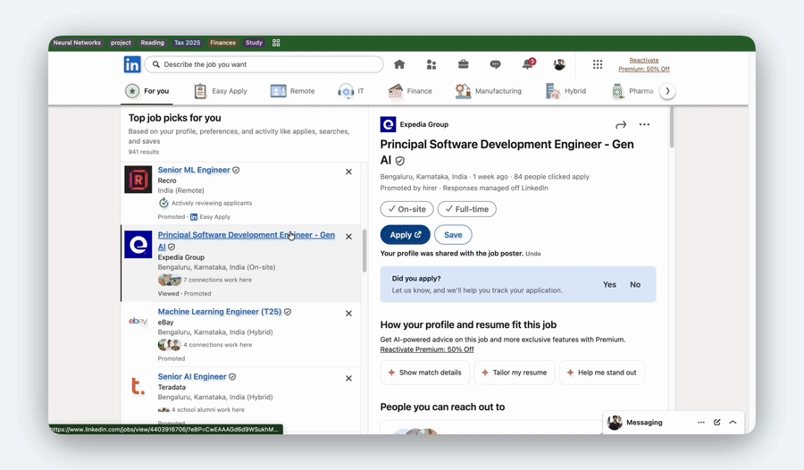
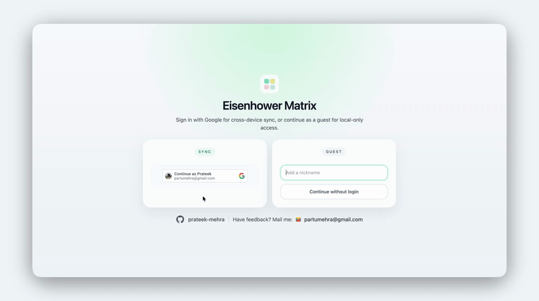
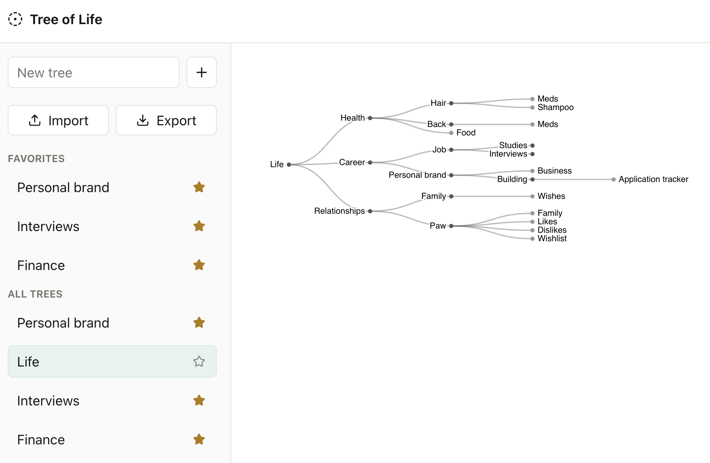

Prateek Mehra
ML Systems & Vision Engineer · 3 years 10 months
Built and deployed business-facing CV inference pipelines serving 100M+ images/month across batch and real-time workloads.
Experience
Software Development Engineer — Data Tech, EatClub Brands (Box8)
- Designed and operated distributed cloud–edge ML infrastructure across 450+ outlets with on-device inference.
- Own end-to-end model lifecycle: data → training → deployment → monitoring.
Skills
Languages: Python, SQL
Frameworks: TensorFlow, PyTorch, scikit-learn, OpenCV
Systems: Airflow, Docker, Linux
Cloud: GCP, AWS
Tinkering on weekends
Where did I apply : Chrome extension for job application tracking over different platforms.

Minimal Eisenhower : Simple to-do list app based on the Eisenhower Matrix framework.

Tree of Life : My attempt to get an overview of my life from ground up, using first principles.
